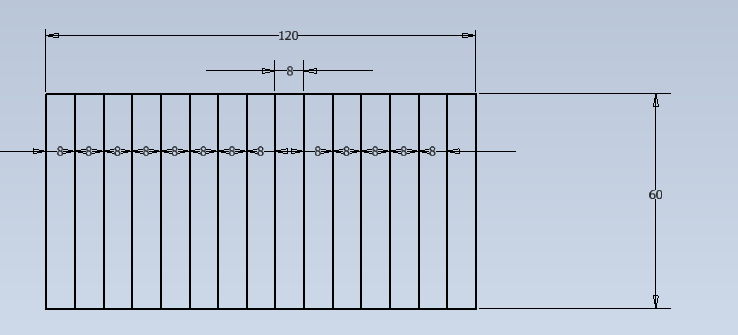
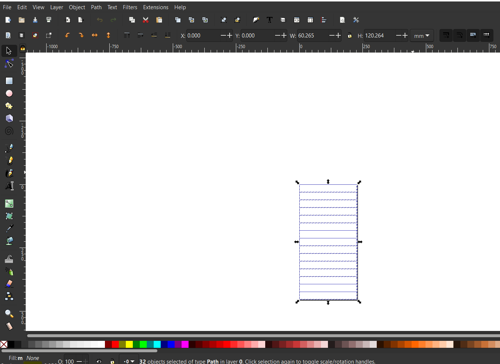

Tölvustuddur skurður
VERKEFNI 2 Í TÖLVUSTUDDRI FRAMLEIÐSLU
Lýsing á verkefni
Einstaklingsverkefni:
1. Notaðu vínylskerann til að búa til eitthvað. 100x50cm skurðarflötur max.
2. Hannaðu parametrískt, geirneglt (pressfit) módel af byggingareiningum. Módelið þarf að vera skalanlegt á mismunandi máta (efnisþykkt, hæðir og breiddir sem nemandi velur), útfært með parametríum í hugbúnaði að eigin vali. Mælt er með Autodesk Fusion 360 ef nemandi vill fá aðstoð kennara, en hafi nemandi tök á því að nota t.d. Solidworks eða Rhino 3D + Grasshopper þá er það í lagi.
Ef hönnunin samanstendur af byggingar einingum (nokkurnskonar púsluspil sem hægt er að raða upp á mismunandi máta) kemur það til hækkunar við mat á verkefni.
Hópaverkefni:
Veljið geislaskera og ákvarðið með prófunum kerf fyrir þann skera. Skjalfestið á ykkar persónulegu vefsíður.
Nemendur mega vinna saman 3 í hóp.
Undirbúningsvinna og markmið
Markmið verkefnis 2 í Tölvustuddri framleiðslu var að hanna parametrískt, geirneglt módel af byggingareiningum. Módelið þurfti að vera skalanlegt þannig hægt væri að stilla kerf og efnisþykkt, ásamt stærðum á flötum. Hægt var að velja um tvær mismunandi gerðir af efni; birkikrossvið eðaakríl. Ég ákvað að hanna tölvustand með hæfilegum halla og opnu baki. Í háskólanum er mikil vinna við tölvu og er því skynsamlegt að passa upp á líkamann þegar setið er við tölvuna tímunum saman. Þegar svo er þá getur verið sniðugt að hafa að minnsta kosti tölvuskjáinn í hæfilegri hæð fyrir hausinn og hálsinn. Þar kemur tölvustandurinn að góðum notum. Eins á tölvan mín það til að hitna þegar að hún er að keyra mörg forrit og sérstaklega þegar mikil foritun er í gangi. En þegar svo er á viftan til í að fara í gang og myndast þar töluverður hávaði. Markmiðið var þá að að tölvustandurinn gæti einnig minnkað bæði hávaðann og eins minnkað það að tölvan hitni með því að hafa frjálst flæði á lofti undir tölvunni. Þegar hugmyndin var komin á stað fór ég í að teikna þetta upp á iPad þaðan fór allt af stað.

Að teikna hlutinn í Fusion 360
Ég teiknaði hlutinn upp þannig að hann festist saman með svo kölluðum „Finger joints“. Fyrir þetta verkefni var ég með mjög litla reynslu af Fusion 360 og var því gáfulegast að fyrsta skrefið yrði að horfa á myndbönd og kynna mér betur hvernig best væri að hanna svona parametrískan hlut. Hér fyrir neðan er myndbandið sem hjálpaði mest við hönnunina á tölvustandinum og það ætti ekki að koma neinum á óvart að það er alls konar fróðleikur um Fusion 360 á YouTube. Ég get klárlega mælt með þessu myndbandi fyrir þá sem eru í svipuðum verkefnum.
Það sem ég byrjaði á að gera áður en ég byrjaði að teikna var að skilgreina parametra undir modify -> change parameters. Með því að gera það og skilgreina parametrana auðveldar það fyrir mig að breyta lengdum án þess að þurfa að byrja upp allt upp á nýtt. Það ættu allar lengdir sem eru notaðar í teikningunni að vera skilgreindar sem parametrar. Eftir að hafa fengið nokkuð góða tilfinningu fyrir "Finger joints" var hægt að byrja á því að teikna grunnplötuna og svo hallandi veggina. En þeir festa saman toppinn og framhliðina. "Finger joints" á hallandi veggjunum eru ekki eins og á hinum. Þeir eru lengri en þykktin á efninu. Þeir mynda því eins konar kórónu í kringum tölvuna. Þetta heldur henni stöðugri eða fastri án þess þó að vera fyrir innstungunum á tölvunni.


Þegar þetta var komið var komið að því að hanna toppinn. Til að tilgangur standsins myndi skila sér sem best var best að hafa miðjuna á topphlutanum eins opna mögulegt væri. Taka þyrfti tillits til þess að fartalvan þyrfti að geta staðið á öllum fjórum gúmmí bitunum undir henni. Bakið átti svo að vera eins opið og hægt væri til að hafa gott flæði á lofti undir tölvunni til þess að auka eins mikið og hægt væri kæliáhrifin sem myndu hjálpa við að minnka hita og hávað.


Næst þarf svo að fletja teikninguna út þegar að hönnunin er tilbúin. Þetta er gert með því að copy-a og paste-a öll "body-in" og snúa þeim þannig að yfirborðin á þeim snúi niður í workspaceinu. Næst þarf að velja öll yfirborðin á öllum "body-unum". Þar á eftir þarf að búa til nýtt sketch. Það þarf að "offsetta" sketch-ið um hálfan kerf. Þá eiga að standa eftir tvöfaldar línur, upprunalegu línurnar og nýtt sett sem hefur verið offsettað um hálfan kerf. Eftir það er svo nauðsynlegt að eyða upprunalegu línunum, annað hvort í Inscape eða í Fusion 360. Það var gert í Inscape að þessu sinni.

Að færa úr Fusion 360 yfir í sjálfan skurðinn
Það sem ég byrjaði á að gera var að nota leiðbeiningar frá Jón Þóri frá FabLab Akureyri til að komast frá Fusion 360 teikningunni í laserskurðinn. Eftir það var svo næsta skref að vista scetch-ið sem dxf skrá. Vegna þess að maður þarf Dxf skrá til opna skrána í forritinu Inkscape. Þegar það er komið og skráin virkar þarf að stilla línuþykktina, hún getur verið mismunandi en hún var um 0,02mm í þessu tilviki. Þetta er víddin á geislanum sem er notaður og það þarf að koma öllum bitunum inn á template-ið. Hér var ég að nota 500mmx500mm krossvið, þá þarf ég að stilla breiddina á templatet-inu sem 500*500 með mm sem mælieiningu undir file->document properties. Þar á eftir ef maður vill sjá línurnar, eftir að línustærðin hefur verið skilgreind. Þá er farið í View->Display Mode->outline. Eftir það er betra að vera viss um að allt sé rétt og ef að maður er orðin viss, þá er skjalið vistað sem pdf og sett á usb-lykil. Eftir það er ekkert eftir nema að fara með lykilinn í geislaskerann.

Þegar komið er að geislaskeranum þarf að ganga úr skugga um að kveikt sé á honum og að passa að hann sé rétt stilltur. Eftir það þarf íðan að koma plötunni fyrir í geislaskeranum. Þegar allt er svo orðið rétt stillt, þá er ekkert eftir nema að hefja skurðinn. Það er ekki nauðsynlegt að fara yfir þær stillingar sem notaðar voru, þar sem þær geta verið mjög mismunandi eftir hverjum og einum geislaskera.
Þegar geislaskerinn er svo búið að skera út formin, er ekkert eftir nema að koma þeim saman og vona að allt hafi heppnast vel.
ÞAð virðist allt hafa gengið vel og hér er hægt að sjá lokaútkomuna á myndunum hér að neðan. Eftir að hafa notað standinn í nokkurn tíma er hægt að segja að líkaminn er betri, hávaðinn minni og talvan verður ekki jafn heit svo kælingaráhrifin virðast vera að virka. Hún er því að hagar sér betur þegar hún er á tölvustandinum heldur en á borðinu.


Niðurstöður og lokaorð
Þetta verkefni gekk í raun frekar vel og var virkilega áhugavert að læra á og að nota þessi forrit og þennan búnað. Þetta er allt frekar áhugaverð og gæti komið sér vel í framtíðinni. Eins alltaf gaman þegar verkefnið skilar einhverju af sér og gæti ég ekki verið ánægðari með tölvustandinn
Tímaskráning
Það fór talsverður tími í að klára þetta verkefni en hér er tímaskráningin:
3 tímar í FabLab að læra á búnaðinn(skerann), læra á Fusion og þar með ákveða parametra o.fl.
3 tímar að teikna.
3 tímar í FabLab að lagfæra teikninguna
0,5 tímar í að færa yfir í inkscape af pdf.
0,5 tímar í skurðinn og samsetninguna.
4 tímar í að aðlaga vefsíðuna að verkefninu.
2 tímar í að klára allt sem tengdist verkefninu.
Samtals um 16 tíma með flest öllu.
Hópaverkefnið
Kerf Test - Undirbúningur: Við byrjuðum á því að leita okkur upplýsinga um hvernig væri best að gera kerf test. Við fundum góðar leiðbeiningar á Instructables.com, hér.
Framkvæmd: Við fundum að best væri að teikna marga ílanga ferhyrninga í röð, svo við teiknuðum það í Inventor.

og færðum svo teikninguna yfir í Inkscape svo við gætum skorið teikninguna út í lasernum.
Skárum svo þessa teikningu og mældum því næst bilið sem myndast hægra megin ef við ýttum svo öllum ferhyrningunum lengst til hægri.
Niðurstöður: Við teiknuðum 15 ferhyrninga sem gerir þá 16 skurði, mældum bilið 2.5mm og deildum því í 16 sem gerir kerfið að 0.15625mm
Þar sem við tókum ekki myndband læt ég fylgja myndband frá öðrum hóp. Hér er það myndband
<
AÐLÖGUN VEFSÍÐU AÐ VERKEFNI 2
Það var ekki mikið nýtt sem var gert í þetta sinn. Sömu aðgerðir voru notaðar og í verkefni 1. Einungis texti, myndir og myndbönd voru notuð og það er allt frekar auðvelt í framkvæmd, þar að segja sérstaklega eftir verkefni 1. Því þetta er mest megnis að nota það sama og í fyrsta verkefninu.
Framtíðar ENDURBÆTUR Á VEFSÍÐU
Á eftir að koma í ljós hvað þarf að laga ef það þarf yfirhöfuð